CHAPTER 1: The Foundation of the Market
Before we can fly, we need to learn where the ground is.
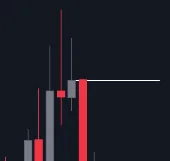
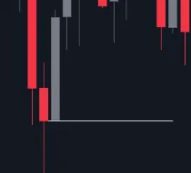
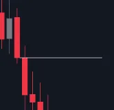
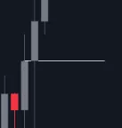
1.1.Understanding SNR Levels
We only use three levels in Malaysian SNR. This level will act both as a support and a resistance, meaning it will stop or slow down movement in either direction, depending on whether the price is above or below it.
1.2.Types of Snr Levels
A shape level:
V shape level:
GAP level:
bullish+bearish
bearish +bullish
two candles in the same
candle
candle
direction
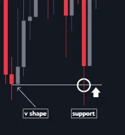
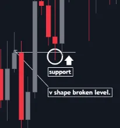
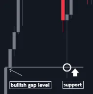

How are these levels act?
Support Level:
Support is a price level where buying interest is strong enough to overcome selling pressure, preventing the price from falling further. It acts as a floor for the price, where traders expect demand to increase and push prices higher
“Anything above this level acts like a support, meaning it stops or slows down further movement upward.”
V shape level:
A shape broken level:
Bullish GAP level:
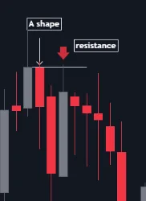
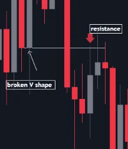
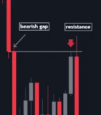

Resistance Level:
Resistance is a price level where selling interest is strong enough to overcome buying pressure, preventing the price from rising further. It acts as a ceiling for the price, where traders expect supply to increase and push prices lower.
"Anything below this level acts like a resistance, meaning it stops or slows down further movement downward A shape level:
V shape broken level:
Bearish GAP level:
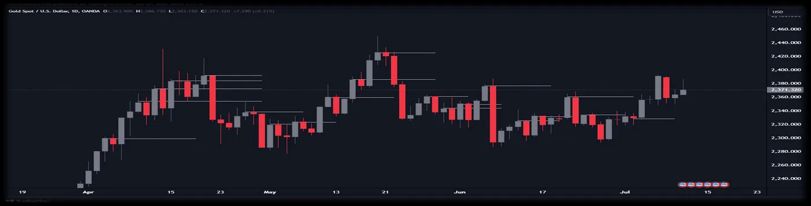
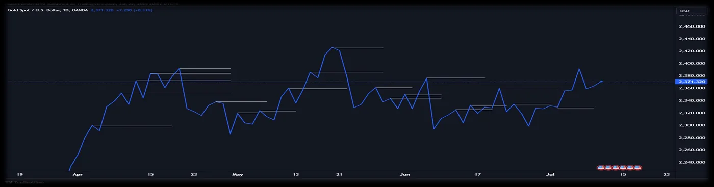

A SHAPE LEVEL
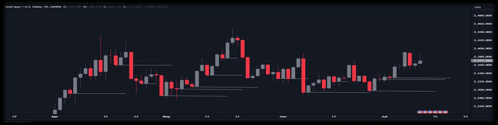
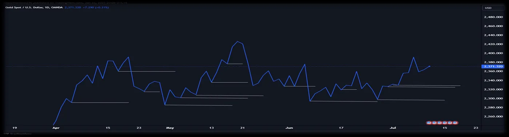

V SHAPE LEVEL
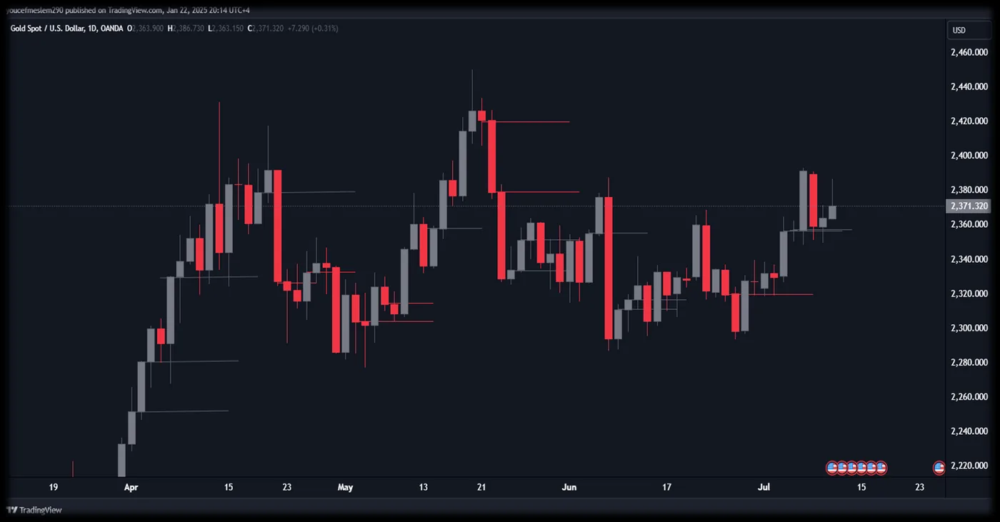

GAP LEVEL
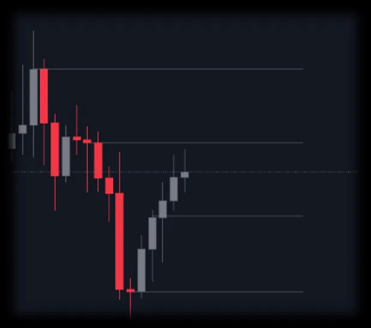
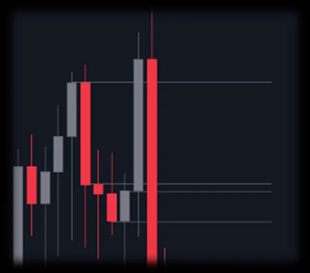
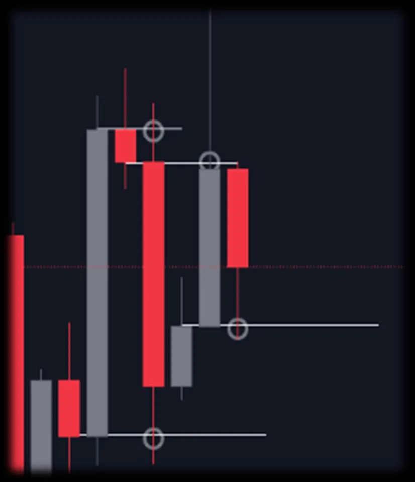

1.3.Fresh and Unfresh Levels:
Fresh level:
Unfresh level:
-The level has never been touched before.
-Levels that have been touched by the wicks of candles
but not broken by the body of a candle.
-The level is broken by the body of a candle.
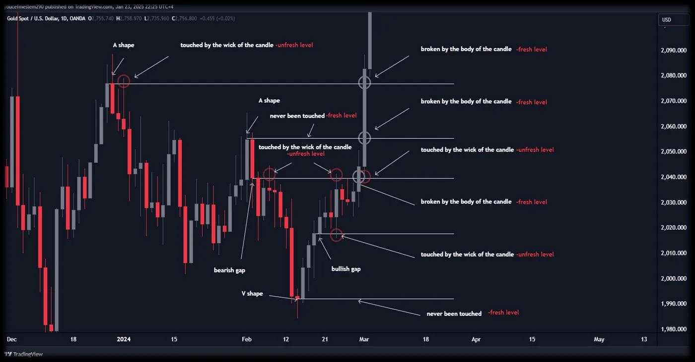

EXMPLE
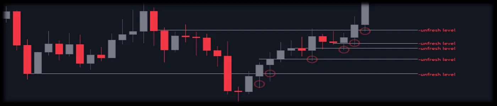
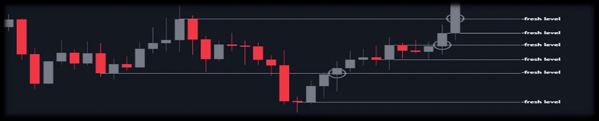

Simple Summary
Always look at the end of the levels to know if the level is fresh or not.
-If the level is touched by the wick, it is unfresh.
-If the level is broken by the body of a candle or never
touched before, it is fresh
Exercises for Understanding SNR Levels
✅ Exercise 1: Yes or No Quiz
Answer each statement with YES or NO. If you answer any question incorrectly, review the lesson before moving on!
1-A-Shape Level: Formed by two candles moving in the same direction.
2-V-Shape Level: Formed by two candles moving in the same direction.
3-Gap Level: Formed when two candles move in opposite directions and leave a gap between them.
4-Fresh Level: Is confirmed when a level has never been touched, or it shows a clear wick rejection.
5-Unfresh Level: Once a level is broken by a candle’s body, it becomes unfresh.
Reusability: The same SNR level can be used more than two times and still be valid.
💡 Remember: If any answer is incorrect, go back and review the lesson for better understanding!
🎯 Exercise 2: Pattern Marking Challenge
Task: Open your trading chart and use your marker tool to identify and mark the following examples:
•100 A-Shape Levels
•100 V-Shape Levels
•100 Gap SNR Levels
💡 Tip: Use different colors for each type. For example, red for A-Shape, blue for V-Shape, and green for Gap Levels.
The more you mark, the more you’ll get the feel of these patterns!
Exercise 3: Fresh vs. Used Levels Challenge
Task: Now, focus on the “fresh” levels. Identify and mark on your chart:
•100 Fresh A-Shape Levels
•100 Fresh V-Shape Levels
•100 Fresh Gap SNR Levels
Exercise 4: Support and Resistance Levels Challenge
Your goal is to identify and mark 30 levels for each type of SNR level that acts as support and resistance in the market.
Mark the following:
🔹 Support Levels (30 levels each)
•V-shape level
•A-shape broken level
•Bullish gap level
•An additional broken level that acts as support ( not previously mentioned—discover it and mark 30 levels for it as well)
🔹 Resistance Levels (30 levels each)
•A-shape level
•Broken V-shape level
•Bearish gap level
•An additional broken level that acts as resistance ( not previously mentioned—discover it and mark 30 levels for it as well)
1.4.Trendlines:
In the Malaysian SNR strategy, trendlines are straight lines connecting specific points on the chart that form either an A shape or a V shape. These shapes help identify the market's direction and show potential areas where the price might react again.
Simple Steps to Draw Trendlines:
Uptrend Line (support):
Connect two or more points where the price moves upward after forming a V shape (a low point).
The line will slope upward.
Downtrend Line (resistance):
Connect two or more points where the price moves downward after forming an A shape (a high point).
The line will slope downward.
Why Trendlines Are Important:
They show the market’s direction (up or down).
They help you find places where the price might reverse or break through.
Keep your trendlines simple—don’t force them to fit the chart. Use them along with SNR levels for better results!
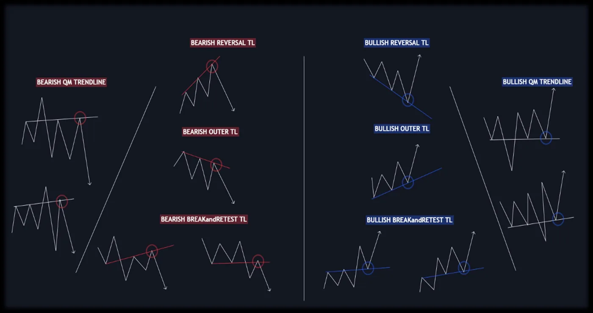

1.5.Types Of Trendlines:
Trendline Exercises:
Exercise1:
Task:
Identify and mark 30 trendlines for each type based on the trendline structures we have learned.
Mark the following:
🔹 Bullish Trendlines (30 trendlines each)
•Bullish Reversal Trendline
•Bullish QM Trendline (15|15).
•Bullish Outer Trendline
•Bullish Break & Retest Trendline(15|15).
🔹 Bearish Trendlines (30 trendlines each)
•Bearish Reversal Trendline
•Bearish QM Trendline (15|15).
•Bearish Outer Trendline
•Bearish Break & Retest Trendline(15|15).
•Exercise2:
Task 1:
•List all the trendlines that act as support.
•List all the SNR levels that act as support.
Task 2:
•List all the trendlines that act as resistance.
•List all the SNR levels that act as resistance.